UNIT - I
Computer Graphics
Computer Graphics is an art/presentation on visual/relevant display unit of images,pictures , animations with the help of computer program.
(a) Computer Graphics refers to the creation, storage and manipulation.
(b) Such as images, education, entertainment, videos, etc. Every image or picture is in fact a graph with different mathematical tricks are used to manipulate some changes in its properties like shape, size, etc.
(c) Computer Graphics is an art of drawing, pictures, lines, charts, etc.
(d) In computer graphics can be created as 2 or 3 dimensional images.
Some Jargons
Pixel: Pixel is a small unit of a picture displayed on a computer screen
Multimedia means that computer information can be represented as the videos, animation, drawing, images.

gd : graphic driver
pixel : Picture Element ( It is the smallest unit of display )
PPI : Pixel per inch
Vector : Mathematical Formula
Raster : Pixel

There are two types of Computer Graphics
- Interactive CG (Ex: Computer Games)
- Non Interactive CG &40Ex: Movies)
Interactive CG: Interactive Computer Graphics that user can control the output with the help of input devices. ( 2 Ways )
Non-Interactive CG: Non Interactive CG that user cannot control the output with the help of input devices ( 1 Way Communication )
Advantages of interactive Computer Graphics-
- Representative uses
- Designing
- Presentation
- Simulation
- Entertainment
- Education
- Healthcare
- GUI
GUI
Most applications that run or present computer and work station and even those that run on terminals attached to time shared computers and network computer server have users interface they rely on desktop windows system to manage multiple simultaneous activities and on point and click facilities to allow users to select menu items, icons at objects on the screen typing is necessary only to input text to be stored and manipulated.
Example: Word processing, spreadsheet ( Excel ) and desktop publishing ( DTP )
Interactive Plotting
Used in business science technology!
Detailing
The next most common use of graphics is to create 2D and 3D graphics or mathematical, physical, economic functions, bar and pie chart, inventory and production chart, all these are used to present meaningful and concised data. The trends and patterns from the data so as to clarify complex phenomena and to facilitate and inform decision making.
CG
Most computer graphics can also be drawn but the computer can accomplish much more in a much short time. One of of the major benefits of computer graphics is that images can be manipulated relatively easy and that a multitude of visual effects are possible because the images can be played over and over again until the desired effect is achieved.
Conceptual Framework for Interactive Graphics
It is a foundational structure of a set of principle that guides you to design, a creation and utilization of interactive graphics.Framework is a layered structure what kind of program should be build.


Representative Usage of CG
- User Interface
- Process Central
- Interactive plotting in business science & technology
- Art & Commerce
Classification of Application Development of Hardware and Software for Computer Graphics
Software: There are two components-
(a) Adobe Photoshop (Roster Graphics): In this, Adobe Photoshop images, we click on cameras and real images which can made up of pixels.
(b) Adobe Illustrator (Vector Graphics): In this vector graphics, we have to use in geometrical figures like lines, drawing, circle, rectangle, etc.
CRT (Cathode Ray Tube)
A cathode ray tube is a specialized vacuum tube in which images are reduced when an electron beam strikes phosphorescent screen.
All CRT's have 3 main elements:
- An electron run
- Deflection system
- Screen
- An Electron run: The electron run provides electron beam which is highly conservative stream of electronics.
- Deflection system: The Deflection system positions the electron beam on the screen and the screen displays a small spot of light at the point where the electron be strike in.
Output Device Development

Classification
- I/P
- Output
- Software

UNIT - II
SCAN CONVERSION AND CLIPPING
Clipping: Completely visible figure (like line, rectangle, etc) in a particular screen is called completed clipping.
Clipping refers to the removal part of seeing. Clipping in Computer Graphics is a process of determining which part of graphical object should be display on the screen and which part should be discarded. It helps in rendering only visible portion of an object.
There are two types-
(a) Point Clipping
(b) Line Clipping
(a) Point Clipping: In point clipping decide whether a single point is inside or outside the viewing area.
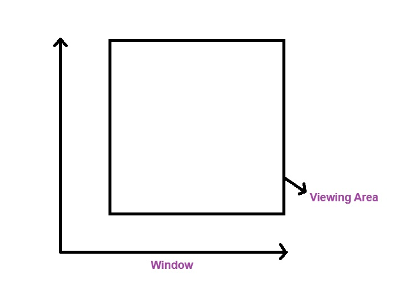If a point inside the window, it is displayed on the screen otherwise it is clipped.
(b) Line Clipping: In this line clipping deals with determining the visibility of line segment. Some of various algorithms like these are used to clip lines.
(i) Cohen Sutherland Algorithm
(ii) Liang-Bansky Algorithm
Scan Converting Lines
In this scan converting lines, involves the process of representing a straight line on a pixel, determining which pixel to turn on approximate. It enables the efficient and accurate(the line) representation of straight lines on the screen.
Some of the Key Steps
(i) End point coordinate: In this end point coordinate can be identified start and end points of a line.
(ii) Slope Calculation:
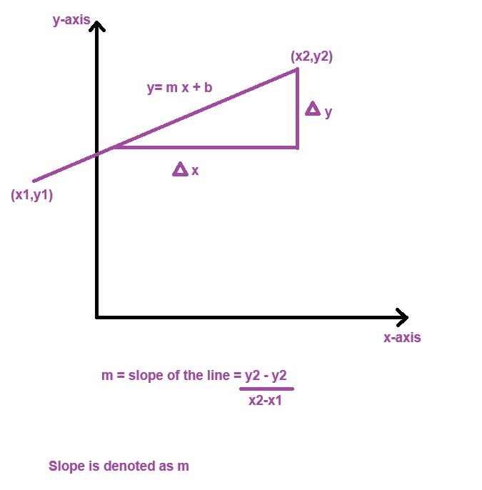(iii) Determination of pixel position: In this, we determine the pixel position which pixel should be represent accurately.
Scan Converting Circles
It is process of representing circle on a pixel determining which pixel to turn on to approximate in circular shape.
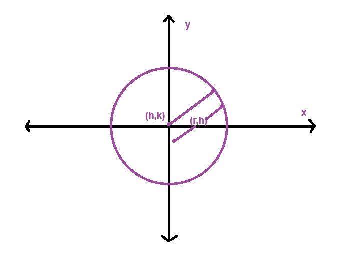(i) Circle and Radius: Define the center with coordinates of (h,k). h(horizontal (x-axis),vertical(y0axis)) and specify the radius 'r','h' represents 'x-axis' or coordinates of center of a circle and 'k' represents 'y-axis' or coordinates of center of a circle.
(ii) Plotting: In this plotting, we have to turn on pixels at calculated position to draw a circle.
(iii) Updating pixel position: In this we have to update decision parameter and move to the next pixel position based on algorithm.
(iv) Decision Parameter: Decision parameter is used for evaluate which pixel should be turn on next common method including mid point circle algorithm.
Scan Converting Ellipse
It is process of determining which pixel to activate in order to approximate shape of ellipse on a pixel.
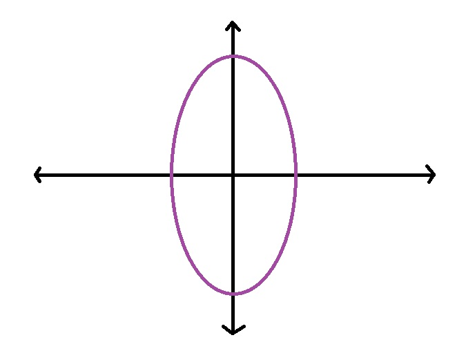(i) Centre of Ellipse: Define the centre of ellipse with point (h,k) and specify the length of semi-measure axis (a) and semi-measure axis (b).
(ii) Updating the pixel position: In this we have to update decision parameter and move to the next pixel position based on algorithm.
(iii) Plotting
(iv) Decision Parameter
Scan Conversion of a Line
A straight line may be defined by two end points.
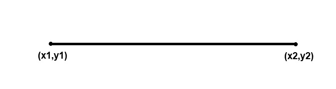 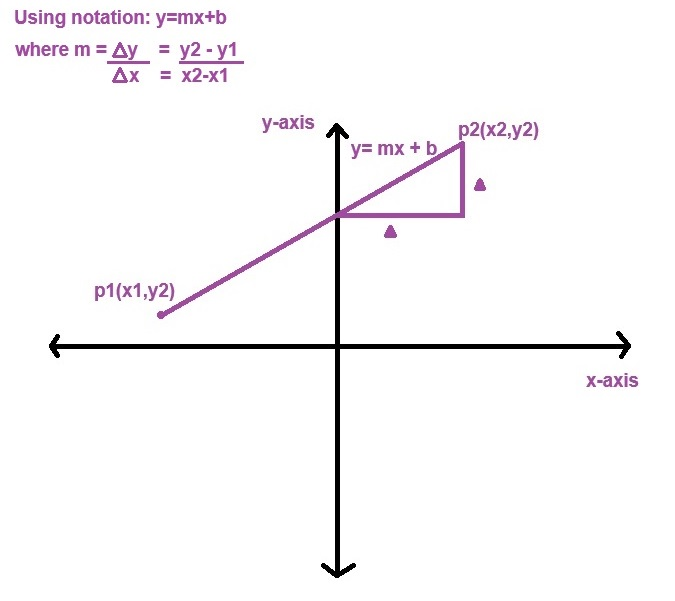(i) Clipping Point Clipping: In this process, involves determining whether single point lies within or outside a specified reason and usually a view port or clipping window. The purpose is to decide whether keep or discard point based on its coordinates.
(ii) Point Coordinates: Identify the coordinates (x,y) of a point.
(iii) Clipping Window: In this clipping window defines boundaries of clipping window, rectangular shape with specify x,y range.
(iv) Comparison: Compare the point coordinates with boundaries of a clipping window.
(v) Decision: If the pint is inside the clipping window, it is considered a visible and can be kept for further processing, otherwise if it is outside the window, it is clipped or discarded.
(vi) Clipping Window: Determining what position of the object will be visible and what part will be clipped or discarded.
(vii) View Port: In this process, objects are outside the clipping window considered as invisible.
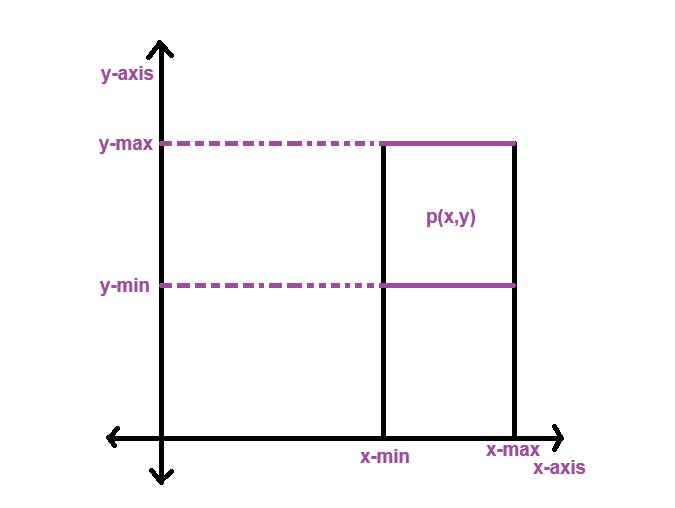Polygon Clipping (Sutherland-Hodgemann)
- Read the coordinates of vertices of a polygon.
- Read the coordinates of a clipping window.
- Consider the left edge of the window.
- Shape resulting intersection and vertices according to the rule.
- Repeat for the clipping of the top, right, bottom.
- Each time pass resulting list of vertices to the next edge of clipping window.
- Stop.
Rules for clipping the polygon edges-
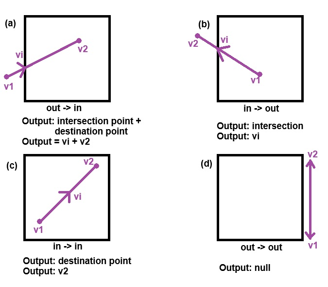Example
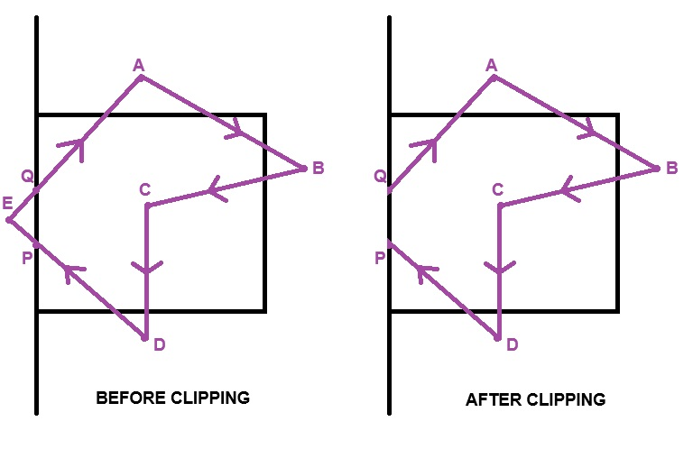| Vertex | Rule | Output |
| AB | in-in | B |
| BC | in-in | C |
| CD | in-in | D |
| DE | in-out | P |
| EA | out-in | Q A |
UNIT - III (Geometrical Transformation 2D)
Transformation
In this, transformation process are the operations like position, size, shape of an object within graphical scene.
There are two types of transformation-
(a) 2D Transformation
(b) 3D Transformation
Transformation is used to modifying the shapes, object and images in computer graphics.
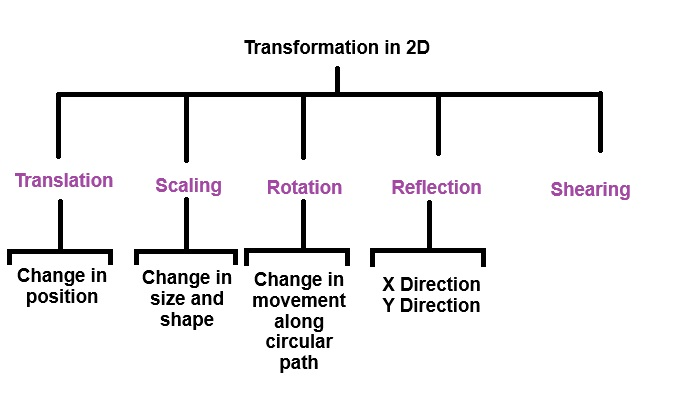Translation
It is an object along straight line path from one coordinate location to another.
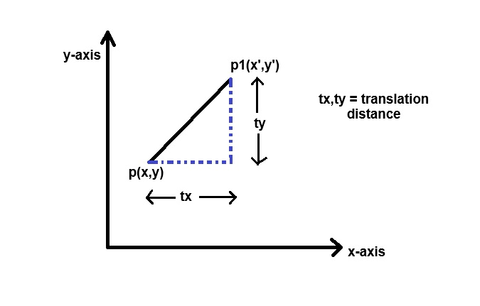To find original coordinates / new coordinates:
x' = x + tx
x' = y + ty
Matrix Representation:
or
Example
A(2,2), B(8,2), C(5,5). Translate triangle with distance of tx=5, ty=6
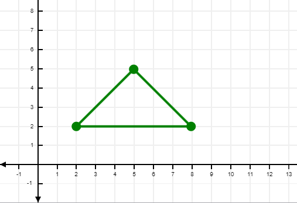A' = A + T
A'
A'
A' = (7,8) [ New coordinates ]
B'
A'
B' = (13,8) [ New coordinates ]
C'
C'
C' = (10,11) [ New coordinates ]
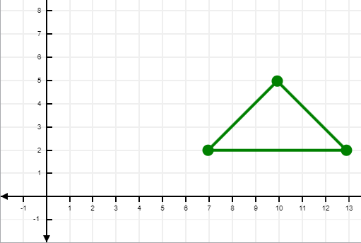Reflection
It is a transformation which evaluates the mirror image of an object.
There are only two types-
(a) Reflection which respect to x-axis
(b) Reflection with respect to y-axis
x' & y' are the new point coordinates of x and y axis.
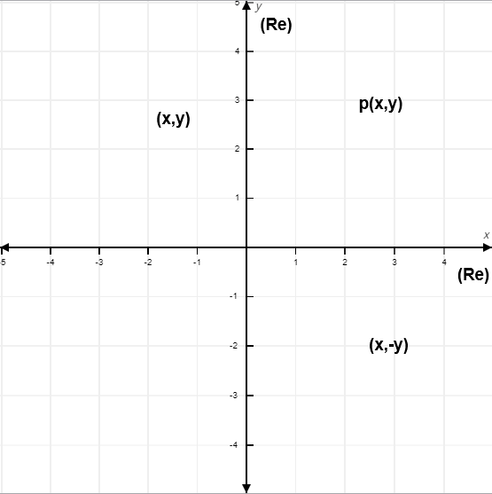Re(x) [Reflection with respect to x-axis. If coordinates are (x,y) then new coordinates will be:
x' = x
y' = -y
P' : New Coordinates
P : Original Coordinates
Formula:
P' = Re(x) . P
P' = Re(x) . P
Re(y) [Reflection with respect to y-axis. If coordinates are (x,y) then new coordinates will be:
x' = -x
y' = y
P' : New Coordinates
P : Original Coordinates
Formula:
P' = Re(y) . P
P' = Re(y) . P